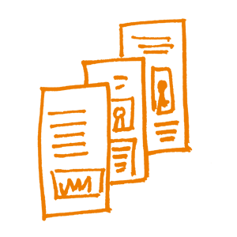

Apprentissage et Formation en Science Ouverte
Ce chapitre est destiné à vous fournir des éléments de contexte concernant les stratégies de formation, des conseils pratiques pour concevoir un cours, ainsi qu'un panorama des théories pédagogiques. Il se concentrera sur trois concepts clé de l'enseignement et de la formation :
La préparation
La conduite du cours ou de la formation
La réflexion
Enseigner ou former est premièrement, une affaire de préparation avant que de dispenser le cours. La préparation inclut le choix du contenu, la sélection d'une méthode d'enseignement adaptée et l'organisation en une séquence qui maximisera l'efficacité et l'impact de votre formation. Deuxièmement, enseigner consiste à dispenser un cours (c'est-à-dire comment agir et interagir avec les participants). Même si vous vous sentez très à l'aise sur un thème donné, il est fortement recommandé d'éviter de commencer votre prestation avant d'avoir terminé la préparation. De plus, vous aurez sans doute besoin de tester votre contenu, en particulier les exercices d'application. Puis, pendant que vous dispensez votre contenu, il vous faudra faire preuve d'une bonne dose de souplesse, parce que les choses se passent rarement exactement comme vous l'aviez prévu. Pour finir, enseigner est aussi une affaire d'évaluation et de retour critique sur soi-même, une fois que le cours a été dispensé. Il est très vraisemblable que vous aurez conduire le même cours ou un cours du même genre plusieurs fois, en particulier si l'évaluation révèle qu'il était de bonne qualité.
Pour mieux vous préparer aux sessions suivantes, vous devrez réfléchir sur ce qui a bien fonctionné, sur ce qui a moins bien fonctionné, et utiliser cette réflexion pour améliorer par itérations vos préparations et votre prestation. En résumé, il y a un "avant", un "pendant" et un "après" la classe ; ces activités prennent place dans un cycle, comme la science.
Ce chapitre fournit des conseils pratiques aux formateurs sur la manière de préparer et de dispenser un cours à des publics variés ; quels sont les obstacles principaux à surmonter et les principaux écueils que l'on doit garder à l'esprit lorsqu'on élabore une formation.
Quelques réflexions avant de commencer
Dans cette partie, nous allons nous concentrer principalement sur le premier aspect (la préparation) et ensuite nous vous donnerons des conseils sur l'organisation et l'animation de votre cours. Pour commencer, nous aborderons quelques questions théoriques qui vous donneront une idée de ce qu'enseigner et apprendre signifient, et des aspects sur lesquels l'enseignement à des adultes diffère de l'enseignement à des adolescents ou des enfants.
Formation vs Enseignement
- L'enseignement fait plutôt référence à la transmission de concepts théoriques, tandis que la formation désigne l'application pratique des connaissances (c'est-à-dire le développement de compétences).
- L'enseignement cherche à délivrer une nouvelle connaissance, tandis que la formation renforce ce qui est déjà acquis par des outils et des techniques permettant de développer un panel de compétences spécifiques.
L'enseignement prend habituellement place dans un environnement scolaire ou universitaire, alors que la formation est associée à des sessions brèves et intensives de cours de niveau post-secondaire ou de deuxième/ troisième cycle de l'enseignement supérieur.
Habituellement, les enseignants font une restitution d'informations à leurs étudiants, tandis que ce sont les formateurs qui reçoivent un retour des apprenants.
Cependant...
La formation est bien un processus d'enseignement ou d'apprentissage d'une compétence ou d'un métier, et les formateurs enseignent réellement quelque chose. De ce fait, la formation peut être considérée comme une activité plus vaste pouvant englober l'enseignement.
L'enseignement peut aussi inclure des activités et des objectifs typiques de la formation, comme des séances de mise en pratique et des démonstrations.
En dépit du fait que les techniques de l'enseignement et de la formation peuvent parfois varier, la différence entre formation et enseignement n'est pas liée au processus lui-même mais à l'objectif visé, la formation ayant en général un objectif plus spécifique que l'enseignement.
Afin de développer ses compétences sur un plan professionnel, toute personne a besoin d'essayer de comprendre les concepts théoriques tout autant que d'être exposé à une expérience pratique. De ce fait, enseignement et formation sont des concepts pédagogiques d'égale importance et complémentaires.

Stratégies
Il existe différentes approches théoriques de l'apprentissage et de la formation, lesquelles peuvent parfois être aussi influencées par la culture dans laquelle vous vivez. Certaines personnes aiment parler et donner des cours magistraux. D'autres aiment écouter, d'autres non. Certains exercices sont simples et appellent des réponses claires. D'autres se concentrent sur des problèmes et ont pour but de donner aux participants le temps et l'occasion d'y réfléchir et de trouver des solutions. Enfin, certaines formations sont conçues de manière à donner aux participants une liberté maximale, afin qu'ils laissent le plus possible s'exprimer leur créativité. Le succès de telles formations est plus difficile à évaluer.
Il existe quatre théories bien connues de l'apprentissage : le comportementalisme, le cognitivisme, le connectivisme et le constructivisme. Elles décrivent différentes perspectives relatives aux mécanismes d'apprentissage.
Ce diagramme simplifié résume leurs principales caractéristiques dans des termes très concrets :

Retranscrit de https://onlinelearninginsights.wordpress.com/2013/05/15/how-couse-design-puts-the-focus-on-learning-not-teaching/
Le travail réalisé par The Software Carpentry aide aussi à comprendre les processus d'apprentissage : https://preview.carpentries.org/instructor-training/
Le cadre pédagogique connecté
Le récent mouvement "Connected Curriculum Framework ou Cadre Pédagogique Connecté" a pour but de moderniser les approches d'apprentissage pour les adapter aux apprenants du XXIe siècle. L'objectif général de ce cadre est de renforcer les liens entre la formation des étudiants et les pratiques de recherche, en supprimant les barrières inutiles. Le cadre valorise un dialogue enrichi, la recherche active, les collaborations et interactions entre étudiants et chercheurs, ainsi qu'entre universités et communautés élargies. Cette démarche suscite des espoirs prometteurs dans les domaines de la science ouverte, de la science citoyenne, de la production participative, etc. Le cadre pédagogique connecté peut être consulté via ce lien : http://www.ucl.ac.uk/ucl-press/browse-books/a-connected-curriculum-for-higher-education
En quoi cela vous concerne-t-il ?
Ce qu'il est important de savoir, c'est qu'il existe des approches différentes et vous ne devez pas vous sentir obligés de suivre une seule stratégie, mais devez plutôt décider à quelle étape de votre formation appliquer telle ou telle stratégie d'enseignement et d'évaluation.
Au bout du compte c'est l'expérience qui importe, et il peut s'avérer utile de comparer votre contenu et vos exercices pratiques par rapport à l'une de ces approches théoriques, pour vérifier s'ils sont bien adaptés à un moment donné ou pour un public donné.

Attentes vis-à-vis du Formateur
Toutes les personnes qui viennent à votre formation arrivent avec des attentes, conscientes et inconscientes. Entre autres attentes (concernant la méthodologie d'enseignement, le contenu et les prérequis), il y aura des attentes spécifiques concernant le formateur lui-même.
La plupart des apprenants attendront de vous :
Que vous soyez enthousiastes à propos des thèmes qu'ils sont en train d'étudier ;
Que vous ayez la compréhension générale d'un ensemble de valeurs scientifiques (ou humanistes) fondamentales et que vous reconnaissiez le rôle de "l'ouverture" comme un élément intrinsèque de ces valeurs ;
Que vous compreniez l'importance de facteurs tels que la transparence de la recherche, la reproductibilité et leurs implications sociétales plus larges ;
Que vous soyez familier du processus de recherche, c'est-à-dire l'organisation, la conduite, la production des résultats d'une recherche, ainsi que la communication et la publication de ces résultats ;
Que vous connaissiez les différents types de processus de recherche et de résultats susceptibles d'être partagés, à savoir : les données, code et logiciels, articles, communications, flux de travail, candidatures à des financements, plans de gestion des données ;
Que vous soyez informé des politiques, réglementations et lois pouvant avoir un impact sur les chercheurs lorsqu'ils contribuent à la science ouverte ;
Que vous compreniez les pressions résultant des politiques institutionnelles ou de leur absence, et qui façonnent la manière dont les chercheurs gèrent leurs données et leurs résultats, depuis l'étape de collecte jusqu'à celle du partage et de la diffusion ;
Que vous compreniez les attentes émanant du tissu social concernant l'utilisation des ressources et résultats des activités scientifiques, comme leur impact sur la science citoyenne, sur la compréhension de la science par le public et leur influence sur les prestataires d'éducation, etc. ;
Que vous soyez capable d'enseigner et que vous ayez une connaissance approfondie de la science ouverte (il se trouve que c'est le thème de ce livre !) ;
Que vous fournissiez des liens vers des documents et des ressources en ligne pouvant aider les débutants.

Publics cibles
Une bonne façon de commencer votre formation sur la Science Ouverte est de vous adresser à un public qui a une idée du sujet et/ou qui s'y intéresse. En général, ces personnes doivent être plus ouvertes à l'idée de la Science Ouverte. Commencer votre formation avec un public motivé présente plusieurs avantages :
Le fait de savoir que votre public s'intéresse vraiment au sujet vous permettra de vous plonger plus facilement dans un nouveau domaine/thème de formation. Vous pouvez envisager d'effectuer une enquête en amont pour évaluer ce point.
Un public motivé contribuera probablement à la discussion et vous fournira des informations utiles sur la manière de développer votre programme de formation.
Des publics motivés peuvent devenir des ambassadeurs de votre formation
Les informations que vous devez recueillir sur votre public :
Il est important de créer un environnement inclusif et de prendre en considération la diversité d'origine et d'expérience de vos participants potentiels pour assurer le succès de toute formation. Pour savoir comment rendre votre atelier inclusif, consultez la Liste de contrôle de planification de conférence réalisée par SPARC.
Le fait que les membres de votre public se connaissent ou non à l'avance aura un impact sur la dynamique de groupe et sur le type d'activités que vous souhaiterez peut-être mener.
Le fait que la participation soit volontaire ou non influencera leur motivation.
Le niveau de connaissance du public concernant les thèmes de discussion prévus aura une incidence sur le contenu et le style des présentations.
Le fait que le public soit habitué à une méthode d'apprentissage spécifique peut influencer la manière dont les participants réagiront à des formats de formation très différents.
Taille du groupe
a. définir la taille du groupe cible, en fonction de l'espace/de la surface et du temps disponibles pour les travaux pratiques
b. la taille du public aura un impact sur la façon dont il s'engagera et interagira avec le processus.
c. si vous souhaitez travailler avec un public plus large, envisagez de former des sous-groupes de discussion et de tenir compte des exigences logistiques qui pourraient en découler.
Demandez-vous si votre événement sera ouvert au public ou limité aux personnes affiliées à l'institution hôte. Un événement public peut contribuer à augmenter et à diversifier la participation, tandis que le fait de le limiter peut vous aider à vous concentrer sur des sujets précis. En outre, les participants d'une même institution seront plus susceptibles de déjà se connaître.
Pensez à utiliser des vidéoconférences, qui vous permettront de toucher un public plus large, bien qu'avec un petit groupe de personnes participant à un événement sur un même lieu, il est souvent plus facile de maintenir leur attention, de créer et de bénéficier du sentiment d'une connexion authentique.
Réfléchissez à la meilleure façon d'aborder les différents publics cibles (réunion, ateliers en face à face, webinaire, bulletin d'information, médias sociaux, etc.)
Avec un public hétérogène, gardez à l'esprit le profil des différents acteurs impliqués afin de répondre à leurs différents besoins, connaissances et/ou responsabilités :
a. financeur, institution/employeur, chercheurs (étudiant, doctorant, chercheur, chef de projet),
b. services supports (gestionnaires et administratifs de la recherche, bibliothèque, informatique)
c. les partenaires commerciaux d'un projet.
Le résultat de la formation doit être que les stagiaires :
aient une meilleure compréhension pratique des concepts clés de la science ouverte et leurs applications correspondantes ;
utilisent avec confiance les connaissances acquises pendant la formation, augmentant ainsi leur impact dans leur environnement professionnel.
deviennent capables de travailler en réseau avec des militants de multiples disciplines et de prendre part à l'initiative de la science ouverte au niveau mondial.

L'Enseignement des adultes
La recherche scientifique est pratiquée par des adultes. Par conséquent, les participants à toute formation en science ouverte seront donc très probablement des adultes, souvent titulaires d'un premier ou d'un deuxième diplôme de l'enseignement supérieur. Il est donc intéressant de voir dans quelle mesure l'enseignement destiné aux enfants ou aux adolescents (la pédagogie) diffère de l'enseignement destiné aux adultes (l'andragogie). Le Réseau Canadien pour l'Alphabétisation et l'Apprentissage a fait un travail intéressant sur cette différence et l'a résumée en sept principes :
Les adultes doivent être volontaires pour apprendre. Cela signifie que la motivation intérieure et les valeurs ajoutées sont déterminantes et qu'il peut être intéressant de les connaître avant de commencer le cours.
Les adultes n'apprendront que ce dont ils pensent avoir besoin. Les adultes ont une approche pratique de l'apprentissage ; ils veulent savoir : "Comment cela va-t-il m'aider tout de suite ? Vous devez donc être concret et direct.
Les adultes apprennent en faisant. C'est vrai pour les enfants aussi, mais la participation active et immédiate compte davantage pour les adultes.
L'apprentissage des adultes se concentre sur les problèmes et ceux-ci doivent être réalistes. Les participants se présenteront souvent avec un problème et il vous incombera d'en détecter les failles et d'essayer de les combler.
L'expérience a une incidence sur l'apprentissage des adultes. Les adultes ont plus d'expérience que les enfants, qu'elle soit négative ou positive. Vous pouvez tirer parti de cette expérience en évitant les associations négatives.
Les adultes apprennent mieux en situation informelle. Les jeunes en âge scolaire doivent généralement suivre un programme d'études. Souvent, les adultes n'apprennent que ce qu'ils pensent devoir savoir. Vous devez donc essayer d'impliquer votre public dans le processus d'apprentissage. Cela peut se faire en rendant l'environnement de formation détendu, informel et accueillant.
Les adultes veulent être guidés. Les adultes veulent des informations qui les aideront à améliorer leur situation ou à résoudre des problèmes, mais ils ne veulent donc pas qu'on leur dise quoi faire, mais plutôt qu'on les aide à choisir parmi des options en fonction de leurs besoins individuels.
Par conséquent, vous devrez :
fournir les aspects de communication, les outils que les chercheurs pourront consulter et le soutien recherché
préparer une documentation en ligne avec des indications claires, compréhensibles et actualisées
rassembler de bons outils utilisables (et découvrables) ou des modèles pour les générer.
En résumé, les adultes ont des intérêts centrés sur leur amélioration personnelle et considèrent la formation comme un exercice de renforcement de leurs compétences. Les adultes aiment être respectés en tant que tels, et leurs attentes se doivent d'être satisfaites individuellement et de manière exhaustive, lorsque cela est possible.
La Taxonomie de Bloom
Les résultats d'apprentissage sont souvent la forme la plus précise d'établir la manière dont une formation peut être dispensée, en adaptant tout ce qui est nécessaire pour que les principaux résultats attendus soient atteints par la majorité du public. Les apprenants parviennent aux résultats d'apprentissage de diverses manières, souvent après une évaluation quantitative.
Spécifier les résultats d'apprentissage fait partie de la gestion de la formation en tant que processus cognitif. En 1956, Benjamin Bloom a créé une taxonomie des niveaux cognitifs, qui a été modifiée au fil du temps. C'est un outil très utile pour proposer des résultats d'apprentissage cohérents et réutilisables dans n'importe quelle matière. Les transitions entre des niveaux cognitifs non contigus ne sont généralement pas acceptables. La taxonomie aide à détecter les situations potentiellement difficiles dans lesquelles l'évaluation peut échouer parce que le niveau de cognition de l'apprentissage ciblé n'est pas le même que celui de l'évaluation utilisée.

Une version actualisée (de 2001) est également disponible sur ce site :
La taxonomie de Bloom est une méthode de classification sur six niveaux. Le travail d'utilisation de la taxonomie de Bloom en vaut la peine car elle représente une avancée importante vers la volonté de construire une formation et un enseignement solides. Outre la taxonomie de Bloom, vous pouvez vous appuyer sur plusieurs types d'aides à la conception telles que des terminologies annotées, des listes de verbes à utiliser ou à éviter dans la planification de vos cours ou la rédaction de vos questionnaires d'évaluation.


Objectifs de formation et Acquis de formation
Ces deux termes sont souvent utilisés de manière interchangeable par la communauté des formateurs. Les objectifs, qui comprennent des buts ou des finalités, et les résultats, qui comprennent des réalisations tangibles, peuvent se chevaucher, mais ne sont pas véritablement identiques.
Lorsque vous concevez une formation, vous devez d'abord penser aux objectifs, puis dresser la liste des acquis que vous souhaitez que votre public atteigne. Ne vous inquiétez pas s'ils semblent se chevaucher ici et là, ou si, comme dans la plupart des cas, un objectif englobe un ou plusieurs résultats. Concevez tous vos exercices pratiques en fonction de résultats spécifiques.
Note : Si vous travaillez en anglais, n'utilisez pas l'abréviation LO pour éviter toute ambiguïté entre Learning Objectives et Learning Outcomes.
Voici une tentative pour clarifier la situation et lever les ambiguïtés :
Les objectifs de Formation
Décrivent les objectifs et les intentions du formateur.
Indiquent le but et les objectifs du cours.
Se concentrent sur le contenu et les compétences importantes au sein de la classe ou du programme.
Décrivent, le cas échéant, ce que les formateurs vont faire.
Doivent être spécifiques et détaillés.
Les Acquis de formation
Les acquis de formation recensent les "produits" généraux du cours et constituent la preuve que les buts ou les objectifs ont été atteints.
Les acquis de formation sont des énoncés qui décrivent ou énumèrent des contenus mesurables et essentiels maîtrisés, reflétant les aptitudes, les compétences et les connaissances que les étudiants ont acquises et qu'ils peuvent démontrer avec succès à l'issue d'une formation.
Les acquis expriment des capacités de réflexion de haut niveau qui intègrent le contenu et les activités du cours et peuvent être observés sous forme de comportement, d'aptitude ou de connaissances concrètes utilisables à l'issue du cours.
Les acquis sont exactement ce que les évaluations sont censées montrer, en particulier ce que l'étudiant sera capable de faire à l'issue du cours.
Un acquis évaluable peut être démontré ou observé et évalué par rapport à des critères.
Les acquis sont des critères clairs et mesurables qui guident l'enseignement, l'apprentissage et le processus d'évaluation dans le cadre du cours.
Pour les objectifs pédagogiques de la science ouverte, voir ce document FOSTER : https://doi.org/10.5281/zenodo.15603 SMASH (Voir pages 13 & 14)
Exemple d'objectif de formation
- "Apprendre à utiliser l'évaluation et le retour d'information en formation avec une efficacité maximale"
Exemple d'un acquis de formation
- "A l'issue du cours, l'apprenant sera en capable de concevoir un exercice de formation et une stratégie pour en évaluer l'efficacité"

Motivation & démotivation
L'un des éléments clés d'une formation est de s'assurer que le manque de confiance que peuvent ressentir les participants lorsqu'ils découvrent un nouveau domaine (la science ouverte, en l'occurrence) ne les dissuade pas d'aller plus loin. Même si certains participants sont généralement familiarisés avec les concepts présentés dans le cadre de la formation, il est important de détecter les situations dans lesquelles les personnes se sentent perdues. Reconnaître que leurs incompréhensions sont légitimes est essentiel pour encourager leur esprit de progression et les motiver à accepter et à adopter les pratiques de la science ouverte.
Plusieurs stratégies peuvent être utilisées tout au long de la formation pour motiver les participants. (Extrait de The Carpentry Instructor Training, https://preview.carpentries.org/instructor-training/)
Stratégies de valorisation
Relier le contenu aux centres d'intérêts ou aux valeurs des participants.
Fournir des tâches et des études de cas authentiques et réelles, idéalement adaptées aux antécédents et aux intérêts immédiats des participants.
Montrer la pertinence par rapport à la vie universitaire actuelle des participants.
Transmettre sa propre passion et son enthousiasme pour la science ouverte.
Stratégies pour créer des attentes positives
Assurer l'alignement des objectifs, des évaluations et des stratégies pédagogiques.
Offrir des possibilités de succès rapide en appliquant les concepts dans des exercices pratiques et des tutoriels.
Stratégies d'auto-efficacité
Offrir aux participants des options et la possibilité de faire des choix.
Donner aux participants l'occasion de réfléchir et d'établir leurs propres liens entre la science ouverte et leur activité spécifique.

Guide pratique
Vous trouverez plus d'informations concernant la planification et l'exécution concrètes d'une formation sur la science ouverte dans les chapitres "Aspects organisationnels" et "Exemples et Conseils Pratiques".

Concevoir un cours
La conception de votre cours sera guidée soit par la planification des objectifs du cours, soit par les résultats attendus.
Planification basée sur les objectifs plutôt que sur les résultats
SMART est une technique intéressante pour préciser les buts / objectifs et elle est aussi utilisée dans la gestion de projet. SMART est un acronyme qui fait référence à cinq critères : Simple - Mesurable - Ambitieux - Réaliste -- Temporellement défini.
Votre objectif est simple s'il peut être compris par une personne qui ne connaît pas le sujet. Autrement dit, vous devez pouvoir expliquer à vos élèves en amont de la formation, ce qu'ils vont apprendre. C'est généralement une bonne idée que de présenter votre objectif au début d'une leçon. Simple signifie que l'objectif doit pouvoir être formulé en une seule phrase concise.
Votre objectif est mesurable si vous pouvez déterminer objectivement si le but a été atteint. La mesurabilité empêche des objectifs imprécis tels que « les étudiants doivent comprendre la science ouverte », qui est trop large et difficile à mesurer car il existe de nombreuses composantes différentes. Utilisez plutôt des verbes d'action : identifier, dessiner, nommer, expliquer, calculer, etc. Les verbes correspondant à de bons objectifs pédagogiques ont été classés par la taxonomie de Bloom des domaines cognitifs. Ce genre de mesure vous aidera, vous et vos élèves, à évaluer ou à auto-évaluer les progrès.
Votre objectif est ambitieux si vous proposez un défi à vos élèves. Y a-t-il un avantage évident pour eux ? Voulez-vous que la leçon élargisse leur horizon ? En quoi cela leur donne-t-il un avantage ? Être ambitieux signifie avoir une réponse à la question : qu'est-ce que les élèves apprendront qu'ils ne pourraient pas apprendre par ailleurs ? Si vous ressentez le désir de faire la différence et de défendre votre point de vue, cela est probablement ambitieux.
Votre objectif est réaliste si vous croyez sincèrement que votre objectif d'apprentissage peut être atteint dans le délai imparti. Être réaliste implique du travail personnel : vos élèves possèdent-ils les savoirs de base nécessaires ? De quelles compétences pratiques ont-ils besoin ? Quels sont les prérequis techniques ? Êtes-vous prêt à répondre à des questions inattendues ? Par exemple, comprendre toutes les licences Creative Commons en une heure peut être un objectif réaliste pour un groupe, mais hors de portée pour un autre.
Votre objectif est temporellement défini s'il existe un cadre temporel dans lequel l'objectif doit être atteint. Les enseignants débutants dépassent souvent le temps qui leur est alloué. Fixer des délais pour vos objectifs d'apprentissage vous aide à structurer votre leçon, à reconnaître et à réagir aux retards inattendus. Un bon moyen de planifier son cours est de disposer d'un horaire détaillé ou un plan de leçon.
Planification basée sur les résultats plutôt que sur les objectifs
Utiliser la conception pédagogique inversée (Backward design) est une technique de planification des leçons qui met l'accent sur les résultats :
Commencez par vos objectifs d'apprentissage.
Décidez de ce qui constitue une preuve que ces objectifs ont été atteints (évaluation sommative, voir Évaluation post-formation ci-dessous).
Choisissez le meilleur format et le meilleur contenu pour préparer le public à ce qu'il devra faire pendant l'évaluation sommative.
Trier le contenu par ordre croissant de complexité, puis fournir le contenu et la motivation dont ont besoin les apprenants pour combler l'écart entre ce qu'ils savent et ce qu'ils doivent savoir pour terminer l'évaluation sommative. (Formation d'instructeur de Software Carpentry)
La conception inversée remet en question les méthodes "traditionnelles" de planification des programmes. Dans la planification traditionnelle des programmes de formation, une liste des contenus qui seront enseignés est créée et / ou sélectionnée. Dans une conception inversée, l'éducateur commence par les objectifs, crée ou planifie des évaluations et enfin définit des plans de cours. Les partisans de la conception inversée comparent le processus à l'utilisation d'une "feuille de route". Dans ce cas, la destination est choisie en premier, puis la feuille de route est utilisée pour planifier le voyage vers la destination souhaitée. A l'inverse, dans la planification de cours traditionnelle, aucune destination officielle n'est identifiée avant le début du voyage.
L'idée dans la conception inversée est d'enseigner pour atteindre le « point final » ou les objectifs d'apprentissage, ce qui garantit généralement que le contenu enseigné reste concentré et organisé. Ceci, à son tour, vise à promouvoir une meilleure compréhension du contenu ou des processus à enseigner aux étudiants. Le formateur est capable de se concentrer sur ce que les élèves ont besoin d'apprendre, sur les données qui peuvent être collectées pour montrer que les élèves ont appris les résultats souhaités (ou normes d'apprentissage) et comment être sûr que les élèves apprendront.

Assemblage de Contenu
Avant de commencer à enseigner, vous devrez collecter et préparer du contenu de formation. Le contenu est aujourd'hui disponible en masse, et la question porte moins sur la recherche ou la création de contenu que sur la recherche de contenu approprié ou l'adaptation du contenu découvert aux besoins et capacités de votre public cible.
Veuillez consulter le chapitre sur les Exemples et Conseils Pratiques qui contient des informations utiles sur la façon d'adopter, d'adapter et de développer du contenu de formation.
Réduction du contenu
L'un des plus grands défis dans la conception de cours de formation est de réduire le contenu au format de formation. Si vous ne disposez que de deux heures, vous devez fournir les informations les plus importantes sur le sujet dans ce délai. En tant que formateur, cependant, vous possédez généralement beaucoup plus de connaissances que vous aimeriez transmettre. Essayez de réduire le contenu aux points clés essentiels. Que faut-il vraiment savoir et quels éléments ne sont que des détails ou des thèmes marginaux ? Fixez des priorités thématiques, soyez transparent sur les omissions et informez vos participants à ce sujet.
Et essayez de garder suffisamment de temps pour les questions libres, les discussions ou le partage d'expérience entre les participants. Cela vous aidera à obtenir les « bonnes » questions. Elles seront souvent bien plus simples que vous ne pensiez ou plus détaillées et spécifiques que prévu.

Démarrer la formation
Présentations
Au début de l'événement de formation, les intervenants doivent parler clairement et se présenter succinctement, ainsi que leurs domaines d'expertise. Pourquoi les participants devraient-ils vous écouter ? Quelle expérience et quelles compétences possédez-vous qui puissent leur servir ? Présentez ensuite les objectifs essentiels, le contenu et les résultats attendus de la formation - ce que les participants vont apprendre et pourquoi. Avoir l'air confiant en tant que personne-ressource est essentiel pour établir la confiance.
Selon la taille de votre public, le temps disponible et le niveau d'interaction requis pour que la formation réussisse, vous souhaiterez éventuellement en ouverture que les participants se présentent brièvement (cela n'est pas vraiment recommandé si le groupe dépasse 15-20 participants). Cela peut être le bon moment pour recueillir les attentes des participants et leur niveau d'expérience (si cela n'a pas déjà été fait, par exemple au moyen d'un questionnaire en ligne), et pour évaluer dans quelle mesure cela correspond aux résultats escomptés et à votre vue d'ensemble attendue ou ciblée de l'audience pour cette formation. S'il y a une grande disparité, c'est le moment d'envisager d'ajuster spontanément votre programme. Par exemple, si les participants ont davantage de connaissances ou d'expérience que prévu, vous pourrez décider de passer plus rapidement sur les fondamentaux des différents domaines de la science ouverte pour consacrer plus de temps à la discussion interactive, en mettant en avant les questions et les expériences des participants.
Sachez qu'il n'est pas absolument nécessaire d'adapter immédiatement le contenu, il suffit d'être clair en faisant savoir aux participants ce qui sera abordé ou pas.
Une fois de plus, les informations fournies par [Software Carpentry] peuvent être utiles pour aider à créer la meilleure ambiance.

Comment briser la glace ?
Pour dynamiser les participants et les aider à faire connaissance avec les formateurs et entre eux, de nombreuses sessions de formation commencent par un exercice destiné à briser la glace. Créer un environnement d'apprentissage chaleureux, accueillant, convivial et positif devrait permettre aux participants de mieux participer et apprendre, et les aider à se sentir plus à l'aise.
Si les activités brise-glace peuvent contribuer à créer une atmosphère bienveillante, une activité mal choisie refroidir l'assistance, en rendant les participants crispés ou mal à l'aise. Vous devez donc soigneusement tenir compte de vos participants et de la dynamique de groupe potentielle lorsque vous choisissez une activité brise-glace. Il ne faut pas que les personnes se sentent gênées ou forcées de divulguer des informations personnelles qu'elles ne souhaitent pas partager. Les groupes diffèrent de manière importante - selon l'âge des participants, leur statut au sein d'une organisation, leur niveau culturel ou d'éducation ; tous ces éléments auront une incidence sur les points communs qu'ils peuvent déjà avoir. Essayez de faire en sorte que ces exercices soient liés aux résultats d'apprentissage escomptés. Référez-vous à la section Lectures complémentaires pour des exemples.
Pendant la formation
Définissez les résultats attendus de la formation et indiquez toujours le cap à vos apprenants :
Où en sommes-nous ?
Où voulons-nous arriver ?
Qu'allons-nous aborder ?
Créez un équilibre entre les moments de cours magistral sur le contenu (max. 20 minutes) et les séances d'activités pour travailler sur ce contenu (Klaus Döring, 2008).
Donnez la parole à vos participants dès que tôt possible ou, en d'autres termes, optez pour l'apprentissage actif !
L'apprentissage actif
L'apprentissage actif est le processus par lequel les apprenants sont activement engagés dans l'action de formation, plutôt que d'absorber "passivement" des cours magistraux. L'apprentissage actif implique la lecture, l'écriture et la discussion ainsi que l'engagement dans la résolution de problèmes, dans l'analyse, la synthèse et l'évaluation. L'apprentissage actif implique souvent un fonctionnement collaboratif avec les autres participants du cours.
L'utilisation des principes de l'apprentissage actif et leur mise en œuvre dans la formation est en général une bonne idée. Vous serez le second meilleur juge de ses avantages. N'oubliez pas que le premier juge est le participant.
L'apprentissage actif permet de contourner la diversité des modes d'acquisition des connaissances et d'autres difficultés en fonction du public. Bien qu'il soit plus efficace pour atteindre des objectifs au plus haut niveau, l'apprentissage actif s'applique également aux questions de cognition liées à la nature du contenu et à la manière de le présenter, comme le montre le diagramme suivant, commun à plusieurs manuels scolaires et ressources en ligne, et connu sous le nom de Cône d'apprentissage. L'apprentissage actif est le plus pertinent aux niveaux supérieurs de la taxonomie de Bloom (Analyser, Définir, Créer, Évaluer), ce qui correspond également aux meilleures strates de mémorisation : ce que vous dites, écrivez ou faites -- la moitié inférieure du Cône d'Apprentissage. Les problèmes de cognition apparaissent plus clairement lorsque le contenu porte sur plusieurs niveaux à la fois sans aborder les niveaux intermédiaires. Confronter votre contenu de formation au Cône d'apprentissage est un moyen facile de détecter ces oublis potentiels pendant que vous dispensez la formation. De même, cela vous permet de décider de recourir à davantage d'aides visuelles lorsque vous pensez que le besoin de mémorisation sera plus important. Ainsi, lorsque vos participants prendront du retard, vous pourrez utiliser cette technique pour effectuer un diagnostic, tenter d'en repérer les causes et choisir les mesures correctives les plus efficaces.

La Ludification
Les fondements de la méthodologie de l'Apprentissage actif se trouvent dans les théories modernes de l'apprentissage (en partie dans le constructivisme et en partie dans le connectivisme) et ajoutent des techniques d'engagement dans l'apprentissage pour faire tomber les barrières et aplanir autant d'obstacles que possible. Par exemple, la ludification d'une session d'apprentissage peut faire glisser les participants de l'acquisition passive de contenu à un engagement total, ce qui amène à repositionner l'apprenant dans une posture réflexive de recul et d'observation du processus d'apprentissage et de son fonctionnement. Un exemple de ludification est donné ici : CURATE: The Digital Curator Game.
L'engagement inclusif
Comment engager des participants qui restent silencieux ? Un bon point de départ peut être de poser une question et d'attendre des réponses pendant au moins 30 secondes (Mary Budd Rowe, 1986). Cela amènera davantage de participants à s'engager dans la discussion, à obtenir des réponses de meilleure qualité et donnera également une chance de répondre aux participants les plus lents.
Une autre méthode pour parvenir à un engagement inclusif est celle de l'empilage progressif. Un modérateur désigne l'intervenant suivant parmi ceux qui souhaitent prendre la parole et qui ne se sont pas encore exprimés. De plus, les personnes sous-représentées, notamment au niveau du genre ou de l'origine raciale, sont choisies pour s'exprimer en premier.
Lors des discussions (en groupes élargis), évitez les interventions debout avec micros sur le principe du premier arrivé/premier servi car cela décourage l'engagement inclusif et génère du monologue. Utilisez plutôt un micro sans fil ou demandez aux personnes de lever la main pour vous assurer que l'intervenant suivant soit choisi par le modérateur. Plus le groupe est important, plus il est nécessaire d'avoir un modérateur qui surveille qui s'exprime et qui ne s'exprime pas. Il incombera également au modérateur, de choisir les intervenants qui s'exprimeront après ceux qui ont demandé la parole, mais qui ne l'ont pas encore fait, afin d'éviter que la formation ne soit dominée que par quelques participants.
Recommandations générales
Restez connecté ! Essayez toujours de garder le contact avec le groupe, surveillez votre rythme et celui des participants.
Veillez à ne pas surcharger les participants avec des contenus trop nombreux et/ou trop compliqués.
Soyez ouvert aux retours à tout moment mais évitez ou interrompez volontairement les discussions interminables.
Pauses : Prévoyez toujours suffisamment de temps pour les pauses. Plus votre cours est long, plus les pauses doivent être longues et fréquentes.
Préparez des versions courtes, moyennes et longues de vos exercices afin d'être flexible si les discussions sont plus ou moins intenses.
Préparez-vous à gérer des participants moins faciles et consultez les conseils de résolution de problèmes avant la formation.
Vous trouverez quelques idées dans le guide de l'animateur "MozFest2017 Facilitator Guide". Dans tous les cas, ayez en tête quoi faire si une conversation parallèle s'engage ou si un apprenant s'avère particulièrement grossier ou inattentif, etc. Sachez qu'il existe des moyens verbaux et non-verbaux pour gérer ces situations.
Synthèse / Vue d'ensemble : A la fin de la formation, il peut être utile d'expliquer aux participants ce que vous avez fait et pourquoi vous l'avez fait. Cela facilitera également l'évaluation.
Prenez vous-même du plaisir à participer à la formation.
Restitution immédiate
À la fin de chaque module, demandez une restitution immédiate aux participants sur le modèle "un plus/un moins", c'est-à-dire indiquer une chose qui était utile/bien dans le module et une chose qui n'était pas claire/qui pourrait être améliorée. Cette restitution peut également être faite sous la forme d'une échelle à plusieurs niveaux.
Une autre façon d'obtenir une restitution instantanée, en particulier à des points prédéfinis, est de recourir à des sondages en continu. Slack peut par exemple être utilisé pour fournir une restitution anonyme sur le rythme du cours, en donnant la possibilité aux membres d'un canal de changer leur choix de réponse au sondage à tout moment. Il est recommandé de montrer le résultat de la restitution aux participants. La présentation de totaux ou de graphiques peut être une source de motivation. Les outils en ligne suscitent plus d'implication, notamment parce que la dépendance à des dispositifs tels que les boîtiers de réponse est en voie de disparition. Les apprenants peuvent utiliser des appareils mobiles connectés à Internet et se sentir plus autonomes. Les exemples de ce type sont nombreux. Il est recommandé de tester les méthodes avant de les utiliser avec un public réel, et de commencer par les systèmes pour lesquels les étapes de familiarisation sont les plus faciles, comme Socrative et Learning Catalytics, Polleverywhere, Directpoll.
Vous trouverez d'autres stratégies de restitution immédiate sur teachthought.com.

Évaluation de la formation
Une formation sur la science ouverte réussie nécessite également des phases d'évaluation. Il est utile, en particulier au début d'un cours, d'étudier les réactions des stagiaires. Une évaluation peut vous fournir des informations précieuses sur vos méthodes et votre contenu. L'évaluation en continu et la prise en compte de la restitution améliorent la qualité de la formation et les performances du formateur.
Les types de restitution
Il existe différentes façons d'obtenir une restitution de la part de vos participants.
Formes classiques d'évaluation
Utilisez un formulaire d'évaluation dans lequel vous demandez aux participants une restitution sur vous en tant qu'enseignant.
Effectuez des bilans intermédiaires pendant le cours pour vérifier si le cours répond aux attentes. Cela vous donne la possibilité de procéder à des ajustements avant de continuer.
Restitution orale
- Demandez aux stagiaires un bref résumé de leur expérience du cours.
Auto-évaluation
- Faites votre propre évaluation : qu'est-ce qui a bien fonctionné, qu'est-ce qui a mal fonctionné ?
Restitution à long terme
- 6 mois après la formation, posez des questions sur les modifications plastiques de comportement et plus généralement sur les changements d'attitude et leurs effets potentiels.
Restitution entre pairs
- Grâce à leur expérience, vos collègues vous aideront à préparer votre cours. Ils pourront éventuellement y assister eux-mêmes, échanger avec vous par la suite et vous faire part de leur restitution.
Mesures de l'efficacité d'une formation
Pour évaluer un cours, vous devez d'abord déterminer ce à quoi vous voulez que vos apprenants se familiarisent, qu'ils sachent, analysent de manière critique ou soient capables d'expliquer. Pourquoi suivez-vous ce cours ? Quels sont les objectifs que vous souhaitez atteindre ? Une fois le cours terminé, vous devez vérifier si vous avez atteint ces objectifs. Il existe différents critères permettant de mesurer le succès et l'efficacité de votre cours (Kirkpatrick & Kirkpatrick, 1994) :
Réaction (réponse aux attentes) : Les stagiaires sont-ils satisfaits du cours ? Ont-ils atteint leurs objectifs d'apprentissage ? Les attentes étaient-elles réalistes ? Comment les participants ont-ils réagi au cours ? Y avait-il une structure claire ou un fil conducteur ?
Apprentissage : Les participants ont-ils appris quelque chose de nouveau ? Le contenu est-il utile dans leur situation actuelle ? Ont-ils tout compris ? Peuvent-ils établir les liens appropriés entre les outils/plateformes présentés et les pratiques de science ouverte ? Répondent-ils aux objectifs d'apprentissage prédéfinis ?
Comportement : Vont-ils changer leur façon de mener des recherches ? Que feront-ils des connaissances qu'ils ont acquises ? Recommanderont-ils la formation/son contenu à d'autres personnes ?
Résultats : quels sont les résultats qui, une fois atteints, auront un impact plus positif au regard des objectifs ? Quels sont ceux qui ont apporté le plus de bénéfices ?
La technique d'évaluation des formations de Kirkpatrick
Le modèle d'évaluation des formations à quatre niveaux de Kirkpatrick est un moyen standardisé d'analyser l'efficacité et l'impact de votre formation.
Exercices
Vérifiez les résultats de l'apprentissage à l'aide de textes à trous et de quiz.
Faites un exercice simple au début de la formation et répétez le même exercice à la fin. Voyez si les opinions ont changé.
Mots-clés : Préparez des bandes de papier et inscrivez des notions clés de la science ouverte. Divisez les stagiaires en groupes d'au moins 3 personnes, et demandez à chaque stagiaire d'expliquer 2 ou 3 mots clés aux autres personnes de son groupe.
Donnez aux participants une version imprimée de la structure générale de la méthode scientifique. Demandez-leur d'associer à chaque étape les outils et les méthodes de science ouverte qui peuvent lui être appliqués.
En fonction du temps, vous pouvez également leur demander de créer un scénario de recherche imaginaire/simple et de le mettre en œuvre en établissant les protocoles de science ouverte adaptés à ce scénario.
Retravaillez votre cours !
Vous aviez vos propres attentes avant de délivrer le cours, et cette expérience d'enseignement vous aura montré que les choses ne fonctionnent pas toujours comme vous l'aviez prévu. Ne soyez pas trop déçu, car il est presque impossible d'obtenir tous les résultats du premier coup. Prenez plutôt la fin du cours comme point de départ pour retravailler votre contenu et repenser certaines de vos méthodes et certains de vos exercices pratiques.
Soyez conscient qu'il vous faudra peut-être même trois tentatives avant d'avoir le sentiment que votre cours a le format requis et qu'il satisfait aussi bien les participants que vous-même en tant que formateur.

Acquis de la formation pour ce chapitre
Après avoir terminé ce chapitre, vous devriez être en mesure de répondre aux demandes de planification et de prestation de formation sur la science ouverte à destination de publics spécifiques.
Exercice
Considérons la situation hypothétique suivante. Vous avez été invité à former des chercheurs principaux dans une école d'ingénieurs. La formation portera sur la gestion des jeux de données partagés entre les groupes de recherche de l'école et leurs collègues au Canada et en Nouvelle-Zélande, dans un contexte de science ouverte.
En un paragraphe, décrivez la stratégie de conception de votre session de formation en grandes étapes, par exemple ce que vous prévoyez de faire avant, pendant et après votre session de formation.
Énumérez trois questions que vous êtes autorisé à poser pour caractériser votre public.
Énumérez trois objectifs de formation.
Énumérez trois acquis de formation attendus.
Énumérez trois actions que vous pouvez utiliser pour briser la glace et engager votre public.
Énumérez trois questions que vous poseriez pour vérifier ce que les participants ont acquis.
Énumérez trois questions que vous poseriez pour vérifier si les participants ont apprécié la session.
Soyez prêt à réagir à un nuage de mots authentique et spontané (avec sli.do ou un autre outil) : n'ayez pas peur de travailler en collaboration avec votre public, apprenez à jouer avec ce que vous savez (et acceptez l'idée que vous avez aussi droit à une certaine dose de perplexité).
Vous pouvez appliquer des exercices similaires pour des formations à destination de différents publics, pour lesquels vous pouvez envisager la même façon de tester vos connaissances.

Lectures complémentaires
Ressources / Exercices pour briser la glace
- Mindtools. Ice Breakers. Easing Group Contribution. mindtools.com
- Students as Partners, Teaching, Learning and Support Office. Peer Support Icebreakers. documents.manchester.ac.uk
- The balance careers. The 10 Best Icebreaker Activities for Any Work Event. Activities for Meetings, Training, and Team Building Sessions. thebalance.com
Références
Ambrose, Bridges, DiPietro, Lovett, Norman and Mayer. How learning works. Seven research-based principles for smart teaching"; ISBN: 978-0-470-48410-4. https://firstliteracy.org/wp-content/uploads/2015/07/How-Learning-Works.pdf
Dale (1969). Audio-Visual Methods in Teaching, 3rd ed., Holt, Rinehart & Winston, New York, p.10.
Döring (2008). Handbuch Lehren und Trainieren in der Weiterbildung. Beltz Verlag (Weinheim, Basel).
Fung (2017). A Connected Curriculum for Higher Education. UCL Press. ucl.ac.uk
Felder and Brent (2009). Active learning. An introduction. PDF.pdf)
Kirkpatrick and Kirkpatrick (1994). Evaluating Training Programs, Berrett-Koehler Publishers.
Mazur (2014). Peer Instruction for Active Learning. Serious science. video
Owen Wilson (2018). The Flipped Classroom. thesecondprinciple.com
Prince (2004). Does Active Learning Work? A Review of the Research. PDF
Rowe (1986). Wait Time: Slowing Down May Be A Way of Speeding Up! Journal of Teacher Education, 37(1), 43–50. doi.org/10.1177/002248718603700110
Siemens (2006). Knowing Knowledge. PDF
Pour approfondir votre compréhension du sujet
- Knowles, Holton, and Swanson (2011). The Adult Learner: The Definitive Classic in Adult Education and Human Resource Development. Oxford: Butterworth-Heinemann.